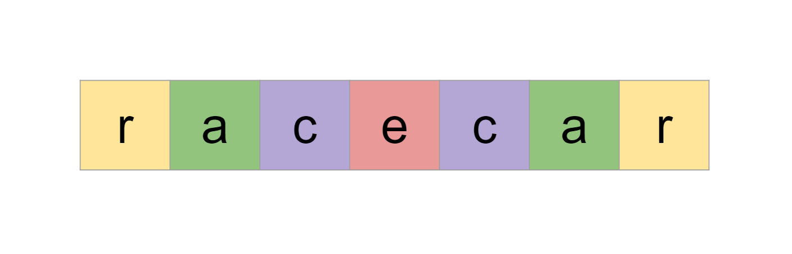
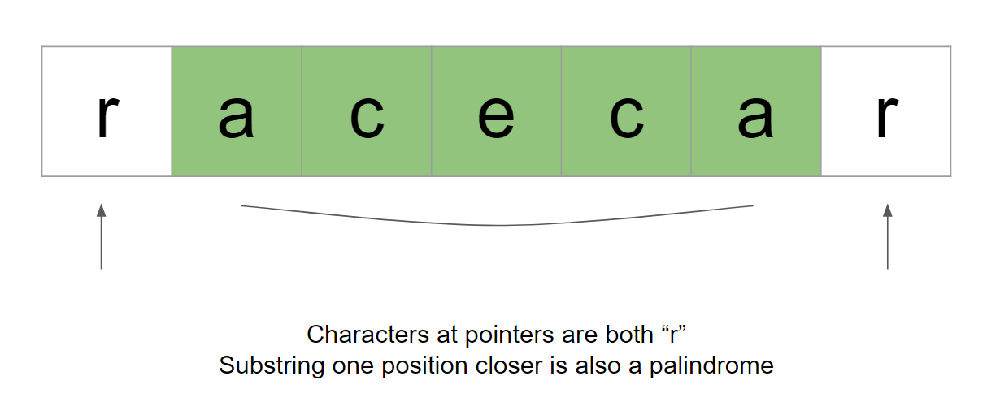

Intuition
We can start with a brute-force approach. We will simply check if each substring is a palindrome, and take the longest one that is.
First, let's talk about how we can check if a given string is a palindrome. This is a classic problem and we can do it using two pointers. If a string is a palindrome, the first character is equal to the last character. The second character is equal to the second last character, and so on.

We initialize two pointers: one at the start of the string and another at the end of it. We check if the characters at the pointers are equal - if they aren't, we know the string cannot be a palindrome. If they are equal, we move to the next pair of characters by moving the pointers toward each other. We continue until we either find a mismatch or the pointers meet. If the pointers meet, then we have checked all pairs and we know the string is a palindrome.
One bonus to using this algorithm is that we frequently exit early on strings that are not palindromes. If you had a
string of length 1000 and the third and third last characters did not match, we would exit the
algorithm after only 3 iterations.
There's another optimization that we can do. Because the problem wants the longest palindrome, we can start by checking the longest-length substrings and iterate toward the shorter-length substrings. This way, the first time we find a substring that is a palindrome, we can immediately return it as the answer.
Algorithm
check(i, j) to determine if a substring is a palindrome.
s[i] and the last character will be
s[j - 1].
left = i and right = j - 1.left < right, do the following steps:s[left] != s[right], return false.left and decrement right.true.length starting from s.length until
1. This variable represents the length of the substrings we are currently considering.
start starting from 0 until and including s.length
- length. This variable represents the starting point of the substring we are currently considering.
start until start
+ length. Pass these values into check to see if this substring is a palindrome. If it is,
return the substring.
Implementation
Java
class Solution {
public String longestPalindrome(String s) {
for (int length = s.length(); length > 0; length--) {
for (int start = 0; start <= s.length() - length; start++) {
if (check(start, start + length, s)) {
return s.substring(start, start + length);
}
}
}
return "";
}
private boolean check(int i, int j, String s) {
int left = i;
int right = j - 1;
while (left < right) {
if (s.charAt(left) != s.charAt(right)) {
return false;
}
left++;
right--;
}
return true;
}
}
Python3
class Solution:
def longestPalindrome(self, s: str) -> str:
def check(i, j):
left = i
right = j - 1
while left < right:
if s[left] != s[right]:
return False
left += 1
right -= 1
return True
for length in range(len(s), 0, -1):
for start in range(len(s) - length + 1):
if check(start, start + length):
return s[start:start + length]
return ""
Complexity Analysis
Given nn
as the length of s,
Time complexity: O(n3)O(n^3)
The two nested for loops iterate O(n2)O(n^2) times. We check one substring of length
n, two substrings of length n - 1, three substrings of length n - 2,
and so on.
There are n substrings of length 1, but we don't check them all since any substring of length 1
is a palindrome, and we will return immediately.
Therefore, the number of substrings that we check in the worst case is 1 + 2 + 3 + ... + n - 1.
This is the partial sum of this
series for n - 1, which is equal to n⋅(n−1)2=O(n2)\frac{n \cdot (n - 1)}{2} = O(n^2).
In each iteration of the while loop, we perform a palindrome check. The cost of this check is linear with
n as well, giving us a time complexity of O(n3)O(n^3).
Note that this time complexity is in the worst case and has a significant constant divisor that is dropped by big O. Due to the optimizations of checking the longer length substrings first and exiting the palindrome check early if we determine that a substring cannot be a palindrome, the practical runtime of this algorithm is not too bad.
Space complexity: O(1)O(1)
We don't count the answer as part of the space complexity. Thus, all we use are a few integer variables.
Intuition
Let's say that we knew the substring with inclusive bounds i, j was a palindrome. If s[i - 1] ==
s[j + 1], then we know the substring with inclusive bounds i - 1, j + 1 must also be a
palindrome, and this check can be done in constant time.
We can flip the direction of this logic as well - if s[i] == s[j] and the substring i + 1, j -
1 is a palindrome, then the substring i, j must also be a palindrome.

We know that all substrings of length 1 are palindromes. From this, we can check if each substring of length 3 is a
palindrome using the above fact. We just need to check every i, j pair where j - i = 2.
Once we know all palindromes of length 3, we can use that information to find all palindromes of length 5, and then
7, and so on.
What about even-length palindromes? A substring of length 2 is a palindrome if both characters are equal. That is,
i, i + 1 is a palindrome if s[i] == s[i + 1]. From this, we can use the earlier logic to
find all palindromes of length 4, then 6, and so on.
Let's use a table dp with dimensions of n * n. dp[i][j] is a boolean
representing if the substring with inclusive bounds i, j is a palindrome. We initialize dp[i][i]
= true for the substrings of length 1, and then dp[i][i + 1] = (s[i] == s[i + 1]) for the
substrings of length 2.
Now, we need to populate the table. We iterate over all i, j pairs, starting with pairs that have a
difference of 2 (representing substrings of length 3), then pairs with a difference of 3, then 4, and so on. For
each i, j pair, we check the condition from earlier:
s[i] == s[j] && dp[i + 1][j - 1]
If this condition is true, then the substring with inclusive bounds i, j must be a palindrome. We set
dp[i][j] = true.
Because we are starting with the shortest substrings and iterating toward the longest substrings, every time we find a new palindrome, it must be the longest one we have seen so far. We can use this fact to keep track of the answer on the fly.
Algorithm
Initialize n = s.length and a boolean table dp with size n * n, and
all values to false.
Initialize ans = [0, 0]. This will hold the inclusive bounds of the answer.
Set all dp[i][i] = true.
Iterate over all pairs i, i + 1. For each one, if s[i] == s[i + 1], then set dp[i][i
+ 1] = true and update ans = [i, i + 1].
Now, we populate the dp table. Iterate over diff from 2 until
n. This variable represents the difference j - i.
In a nested for loop, iterate over i from 0 until n - diff.
j = i + diff.s[i] == s[j] && dp[i + 1][j - 1], we found a palindrome.
dp[i][j] = true and ans = [i, j]Retrieve the answer bounds from ans as i, j. Return the substring of s
starting at index i and ending with index j.
Implementation
Java
class Solution {
public String longestPalindrome(String s) {
int n = s.length();
boolean[][] dp = new boolean[n][n];
int[] ans = new int[]{0, 0};
for (int i = 0; i < n; i++) {
dp[i][i] = true;
}
for (int i = 0; i < n - 1; i++) {
if (s.charAt(i) == s.charAt(i + 1)) {
dp[i][i + 1] = true;
ans[0] = i;
ans[1] = i + 1;
}
}
for (int diff = 2; diff < n; diff++) {
for (int i = 0; i < n - diff; i++) {
int j = i + diff;
if (s.charAt(i) == s.charAt(j) && dp[i + 1][j - 1]) {
dp[i][j] = true;
ans[0] = i;
ans[1] = j;
}
}
}
int i = ans[0];
int j = ans[1];
return s.substring(i, j + 1);
}
}
Python3
class Solution:
def longestPalindrome(self, s: str) -> str:
n = len(s)
dp = [[False] * n for _ in range(n)]
ans = [0, 0]
for i in range(n):
dp[i][i] = True
for i in range(n - 1):
if s[i] == s[i + 1]:
dp[i][i + 1] = True
ans = [i, i + 1]
for diff in range(2, n):
for i in range(n - diff):
j = i + diff
if s[i] == s[j] and dp[i + 1][j - 1]:
dp[i][j] = True
ans = [i, j]
i, j = ans
return s[i:j + 1]
Complexity Analysis
Given nn
as the length of s,
Time complexity: O(n2)O(n^2)
We declare an n * n table dp, which takes O(n2)O(n^2) time. We then populate O(n2)O(n^2) states i, j - each state takes O(1)O(1) time to compute.
Space complexity: O(n2)O(n^2)
The table dp takes O(n2)O(n^2) space.
Intuition
In the first approach, the palindrome check cost O(n)O(n). In the second approach, the palindrome check cost O(1)O(1). This allowed us to improve the time complexity from O(n3)O(n^3) to O(n2)O(n^2).
The problem with the second approach is that we always iterated over O(n2)O(n^2) states of i, j. Can we optimize further to
minimize the number of iterations required?
In the first approach, we implemented a palindrome check using two pointers. We started by checking the first and last characters, then the second and second last characters, and so on.
Instead of starting the pointers at the edges and moving inwards, the same logic can be applied when starting the
pointers at the center and moving outwards. A palindrome mirrors around its center. Let's say you had s =
"racecar". If we start both pointers at the middle ("e") and move them away from each other,
we can see that at every iteration, the characters match: e -> c -> a -> r.
The previous two approaches focused on the bounds of a substring - i, j. There are O(n2)O(n^2) bounds, but only O(n)O(n) centers. For each
index i, we can consider odd-length palindromes by starting the pointers at i, i. To
consider the even length palindromes, we can start the pointers at i, i + 1. There are nn starting points for the odd-length palindromes
and n−1n - 1
starting points for the even-length palindromes - that's 2n−1=O(n)2n - 1 = O(n) starting points in
total.
This is very promising - we can lower the minimum iterations required if we focus on the centers instead of on the
bounds. Let's use a helper method expand(i, j) that starts two pointers left = i and
right = j. In this method, we will consider i, j as a center. When i == j, we
are considering odd-length palindromes. When i != j, we are considering even-length palindromes. We
will expand from the center as far as we can to find the longest palindrome, and then return the length of this
palindrome.
Let's say that we have a center i, i. We call expand and find a length of
length. What are the bounds of the palindrome? Because we are centered at i, i, it means
length must be odd. If we perform floor division of length by 2, we will get the number of
characters dist on each side of the palindrome. For example, given s = "racecar", we have
length = 7 and dist = 7 / 2 = 3. There are 3 characters on each side - "rac"
on the left and "car" on the right. Therefore, we can determine that the bounds of the palindrome are
i - dist, i + dist.
What about a center at i, i + 1? length must be even now. If we have a palindrome with
length 2, then length / 2 = 1, but there are zero characters on each side of the center.
We can see that dist is too large by 1. Therefore, we will calculate dist as (length
/ 2) - 1 instead. Now, dist correctly represents the number of characters on each side. The
bounds of the palindrome are i - dist, i + 1 + dist.
Algorithm
expand(i, j) to find the length of the longest palindrome centered at i,
j.
left = i and right = j.left and right are both in bounds and s[left] == s[right],
move the pointers away from each other.
left and ending at right
is right - left + 1.
s[left] != s[right]. Therefore, we need to
subtract 2. Return right - left - 1.
ans = [0, 0]. This will hold the inclusive bounds of the answer.i over all indices of s.
i: oddLength =
expand(i, i).
oddLength is the greatest length we have seen so far, i.e. oddLength > ans[1] -
ans[0] + 1, update ans.
i: evenLength =
expand(i, i + 1).
evenLength is the greatest length we have seen so far, update ans.ans as i, j. Return the substring of s
starting at index i and ending with index j.
Implementation
Java
class Solution {
public String longestPalindrome(String s) {
int[] ans = new int[]{0, 0};
for (int i = 0; i < s.length(); i++) {
int oddLength = expand(i, i, s);
if (oddLength > ans[1] - ans[0] + 1) {
int dist = oddLength / 2;
ans[0] = i - dist;
ans[1] = i + dist;
}
int evenLength = expand(i, i + 1, s);
if (evenLength > ans[1] - ans[0] + 1) {
int dist = (evenLength / 2) - 1;
ans[0] = i - dist;
ans[1] = i + 1 + dist;
}
}
int i = ans[0];
int j = ans[1];
return s.substring(i, j + 1);
}
private int expand(int i, int j, String s) {
int left = i;
int right = j;
while (left >= 0 && right < s.length() && s.charAt(left) == s.charAt(right)) {
left--;
right++;
}
return right - left - 1;
}
}
Python3
class Solution:
def longestPalindrome(self, s: str) -> str:
def expand(i, j):
left = i
right = j
while left >= 0 and right < len(s) and s[left] == s[right]:
left -= 1
right += 1
return right - left - 1
ans = [0, 0]
for i in range(len(s)):
odd_length = expand(i, i)
if odd_length > ans[1] - ans[0] + 1:
dist = odd_length // 2
ans = [i - dist, i + dist]
even_length = expand(i, i + 1)
if even_length > ans[1] - ans[0] + 1:
dist = (even_length // 2) - 1
ans = [i - dist, i + 1 + dist]
i, j = ans
return s[i:j + 1]
Complexity Analysis
Given nn
as the length of s,
Time complexity: O(n2)O(n^2)
There are 2n−1=O(n)2n - 1 = O(n) centers. For
each center, we call expand, which costs up to O(n)O(n).
Although the time complexity is the same as in the DP approach, the average/practical runtime of the
algorithm is much faster. This is because most centers will not produce long palindromes, so most of the
O(n)O(n) calls to
expand will cost far less than nn
iterations.
The worst case scenario is when every character in the string is the same.
Space complexity: O(1)O(1)
We don't use any extra space other than a few integers. This is a big improvement on the DP approach.
Believe it or not, this problem can be solved in linear time.
Manacher's algorithm finds the longest palindromic substring in O(n)O(n) time and space.
Note: this algorithm is completely out of scope for coding interviews. Because of this, we will not be talking about the algorithm in detail. This approach has been included for the sake of completeness and for those who are curious about algorithms beyond the scope of interviews.
If you wish to learn more about Manacher's algorithm, please reference the above link.
Implementation
Java
class Solution {
public String longestPalindrome(String s) {
StringBuilder sPrime = new StringBuilder("#");
for (char c: s.toCharArray()) {
sPrime.append(c).append("#");
}
int n = sPrime.length();
int[] palindromeRadii = new int[n];
int center = 0;
int radius = 0;
for (int i = 0; i < n; i++) {
int mirror = 2 * center - i;
if (i < radius) {
palindromeRadii[i] = Math.min(radius - i, palindromeRadii[mirror]);
}
while (i + 1 + palindromeRadii[i] < n &&
i - 1 - palindromeRadii[i] >= 0 &&
sPrime.charAt(i + 1 + palindromeRadii[i]) == sPrime.charAt(i - 1 - palindromeRadii[i])) {
palindromeRadii[i]++;
}
if (i + palindromeRadii[i] > radius) {
center = i;
radius = i + palindromeRadii[i];
}
}
int maxLength = 0;
int centerIndex = 0;
for (int i = 0; i < n; i++) {
if (palindromeRadii[i] > maxLength) {
maxLength = palindromeRadii[i];
centerIndex = i;
}
}
int startIndex = (centerIndex - maxLength) / 2;
String longestPalindrome = s.substring(startIndex, startIndex + maxLength);
return longestPalindrome;
}
}
Python3
class Solution:
def longestPalindrome(self, s: str) -> str:
s_prime = '#' + '#'.join(s) + '#'
n = len(s_prime)
palindrome_radii = [0] * n
center = radius = 0
for i in range(n):
mirror = 2 * center - i
if i < radius:
palindrome_radii[i] = min(radius - i, palindrome_radii[mirror])
while (i + 1 + palindrome_radii[i] < n and
i - 1 - palindrome_radii[i] >= 0 and
s_prime[i + 1 + palindrome_radii[i]] == s_prime[i - 1 - palindrome_radii[i]]):
palindrome_radii[i] += 1
if i + palindrome_radii[i] > radius:
center = i
radius = i + palindrome_radii[i]
max_length = max(palindrome_radii)
center_index = palindrome_radii.index(max_length)
start_index = (center_index - max_length) // 2
longest_palindrome = s[start_index: start_index + max_length]
return longest_palindrome
Complexity Analysis
Given nn
as the length of s,
Time complexity: O(n)O(n)
From Wikipedia (the implementation they describe is slightly different from the above code, but it's the same algorithm):
The algorithm runs in linear time. This can be seen by noting that Center strictly increases after each outer loop and the sum Center + Radius is non-decreasing. Moreover, the number of operations in the first inner loop is linear in the increase of the sum Center + Radius while the number of operations in the second inner loop is linear in the increase of Center. Since Center ≤\leq 2n+1 and Radius ≤\leq n, the total number of operations in the first and second inner loops is O(n)O(n) and the total number of operations in the outer loop, other than those in the inner loops, is also O(n)O(n). The overall running time is therefore O(n)O(n).
Space complexity: O(n)O(n)
We use sPrime and palindromeRadii, both of length O(n)O(n).